À la conception
Maladies génétiques, aberrations chromosomiques (trisomie, syndrome de l’X fragile), incompatibilité de groupe sanguin, etc.
Un centre de compétences en psycho-pédagogie spécialisée qui prend en charge les enfants et les jeunes présentant des troubles du développement intellectuel.
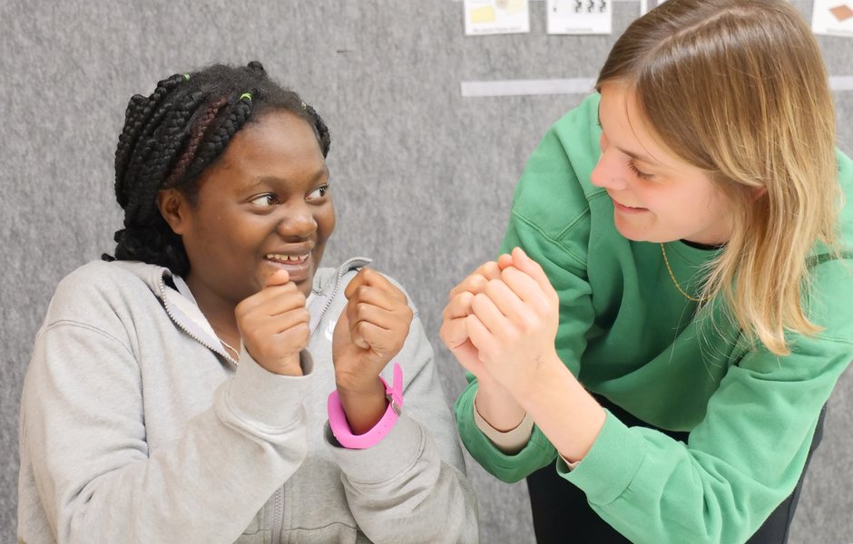
Le Centre pour le développement intellectuel (CDI) est un centre de compétences en psycho-pédagogie spécialisée prenant en charge les enfants et jeunes présentant des troubles du développement intellectuel.
Le CDI intègre le réseau de 8 centres de compétences en psycho-pédagogie spécialisée et l’Agence pour la transition vers une vie autonome (ATVA), favorisant l’inclusion scolaire.
Les troubles du développement intellectuel englobent diverses maladies d’étiologie différente, apparaissant en phase développementale. Elles se caractérisent par des fonctions intellectuelles significativement inférieures à la moyenne et par un comportement adaptatif (CIM-11).
À la conception
Maladies génétiques, aberrations chromosomiques (trisomie, syndrome de l’X fragile), incompatibilité de groupe sanguin, etc.
Pendant la grossesse
Rayonnements ionisants, virus, médicaments, parasites, alcool, tabagisme, etc.
À la naissance
Maladies cérébrales du nouveau-né, prématurité, etc.
Après la naissance
Maladies infectieuses, virales ou métaboliques, intoxications, traumatismes crâniens, accidents du travail ou de la circulation, noyade, asphyxie, problèmes neurologiques, accidents domestiques, etc.
Quelle que soit la cause, la personne demeure porteuse permanente d’une déficience intellectuelle. Les personnes concernées peuvent nécessiter un soutien et un accompagnement pour développer leur indépendance, leurs capacités individuelles et leurs interactions sociales dans divers environnements : domicile, école, travail, communauté.
Chaque individu possède une personnalité unique et des attributs estimables. Les membres de chaque unité s’engagent à valoriser et apprécier cette diversité. Le travail repose sur le respect mutuel et la confiance, avec l’ambition d’offrir à chacun le droit à l’autodétermination et la possibilité d’épanouissement individuel.
Le personnel valorise l’individualité de chaque élève. Les concepts pédagogiques et thérapeutiques sont complémentaires et fondés sur des constats scientifiques. Les offres s’appuient sur des théories et modèles didactiques et méthodologiques innovantes.
Dans une société inclusive, l’autodétermination est essentielle pour permettre à chaque individu une participation maximale. Cette prémisse anime toutes les actions favorisant l’épanouissement intellectuel et physique, l’autonomie et le bien-être des enfants et jeunes à besoins éducatifs spécifiques.
Le CDI assure un accompagnement individualisé des enfants et jeunes, des familles et des partenaires externes, inscrit dans une relation de confiance et de respect mutuel. Grâce à une approche basée sur la prévention, l’intervention et la compensation, les collaborateurs permettent aux personnes accompagnées de participer aux domaines de la vie qui les intéressent.
Trois leviers guident l’accompagnement, de la sensibilisation la plus précoce jusqu’aux aménagements qui rendent la scolarité et le travail accessibles.
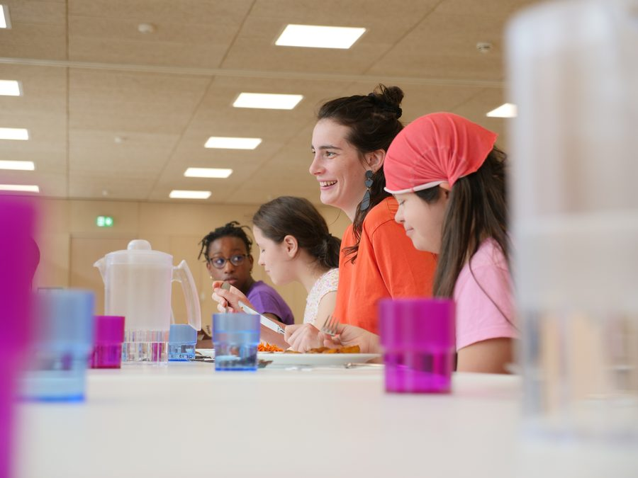
Informer et accompagner les parents et les professionnels le plus tôt possible reste depuis toujours un soutien primordial.
Dès l’âge précoce, une première sensibilisation dans le domaine du handicap peut prévenir des frustrations et des échecs futurs. Quel que soit le niveau de prévention, ciblée ou universelle, le CDI s’efforce de promouvoir l’information et la sensibilisation au sujet de la psycho-pédagogie spécialisée.
Dans le contexte de l’inclusion scolaire et sociale, le personnel assure des interventions à titre consultatif sur sollicitation et en concertation avec les parents, représentants légaux et professionnels concernés. Le CDI entend aussi contribuer aux formations initiales et continues du personnel employé dans les écoles, les lycées et les services d’éducation et d’accueil.
Des interventions spécialisées et adaptées favorisent l’inclusion et permettent aux enfants et jeunes de progresser.
Selon les besoins de l’enfant ou du jeune, le CDI intervient à différents niveaux :
La compensation des conséquences du handicap est un droit, indépendamment de l’origine et de la nature de la déficience.
Des aménagements pédagogiques, quel que soit le lieu de scolarisation, ou le recours à des professionnels spécialisés sont mis en avant afin d’assurer une progression dans les apprentissages (Nachteilsausgleich). La mise en place d’adaptations permet à chaque enfant et jeune de s’intégrer dans sa situation de formation et de travail : pédagogie adaptée, analyse et organisation de l’environnement.
De manière générale, la compensation des désavantages peut être définie comme « la neutralisation ou la diminution des limitations occasionnées par un handicap ». Jost & al., 2014. Nachteilsausgleich: Ein Schritt hin zur inklusiven Schule
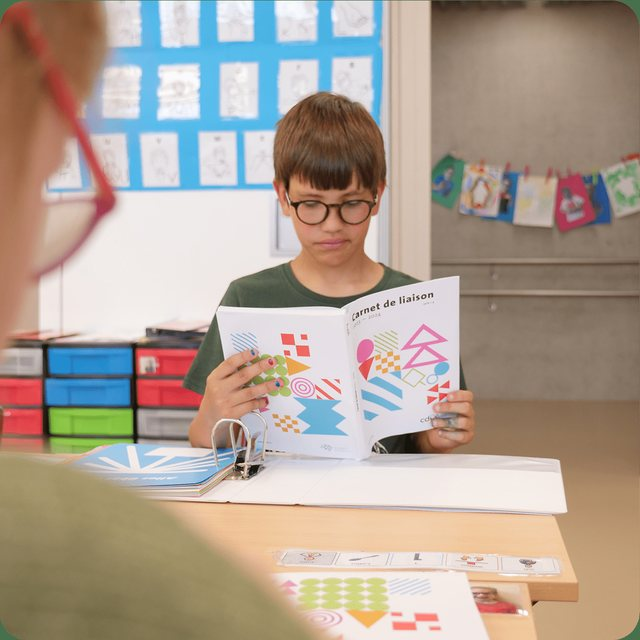
Ou le jeune majeur lui-même, souhaitant avoir des conseils dans le contexte des troubles du développement intellectuel.
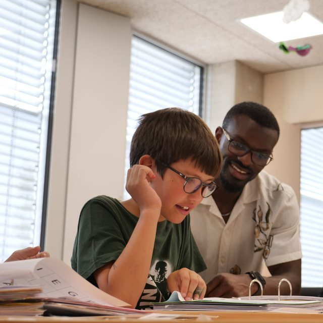
Des écoles et lycées, souhaitant obtenir un diagnostic spécialisé ou des conseils sur des stratégies d’intervention appropriées.
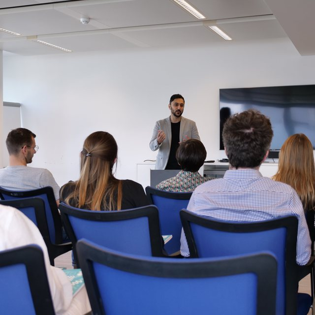
Demandeurs de formations continues ou d’hospitations dans le contexte des troubles du développement intellectuel.
419 élèves répartis sur 7 annexes
85 prises en charge ambulatoires
Nous nous engageons chaque jour pour atteindre nos objectifs communs et assumons ensemble la responsabilité de nos actions. Nous répondons aux exigences quotidiennes avec professionnalisme, créativité, soutien mutuel et empathie.
Nous estimons les compétences et l’expérience complémentaire de nos collaborateurs à leur juste valeur et considérons l’individualité de chacun comme une précieuse ressource.
Sept annexes réparties sur le territoire.
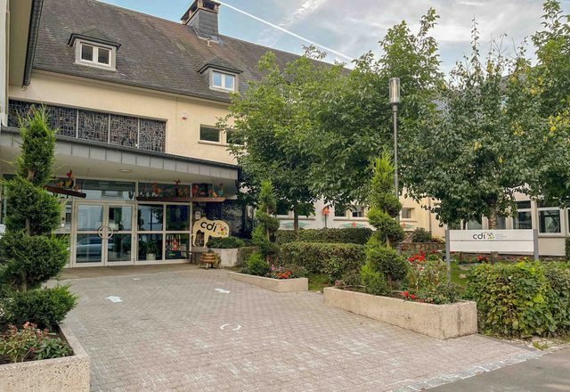
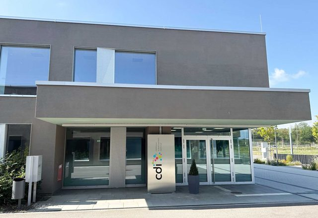
2, Passage Pablo Picasso
L-4457 Belvaux
+352 55 32 46 - 280 info.annexebelval@cc-cdi.lu
Voir sur la carte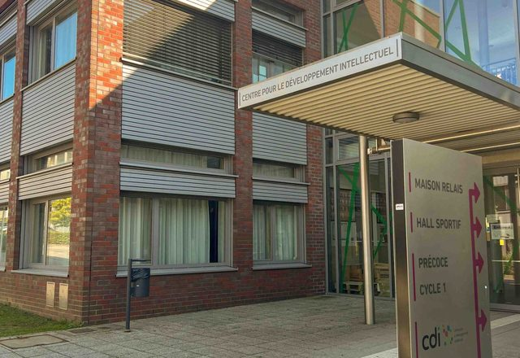
2, rue John Castegnaro
L-4639 Differdange
+352 58 77 1 - 2310 info.annexedifferdange@cc-cdi.lu
Voir sur la carte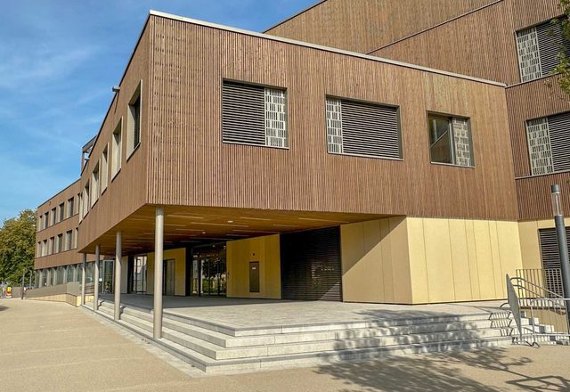
1, Place Isidore Comes
L-6443 Echternach
+352 28 33 75 51 info.annexeechternach@cc-cdi.lu
Voir sur la carte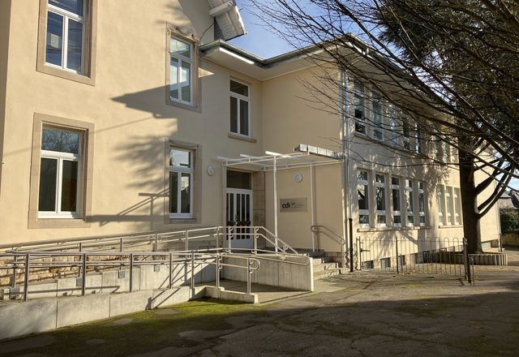
27, avenue du Dix Septembre
L-2551 Luxembourg
+352 24 79 52 60 info.annexecentre@cc-cdi.lu
Voir sur la carte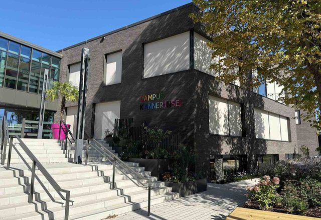
24, rue de Bettembourg
L-3320 Berchem
+352 36 92 32 96 01 info.annexeberchem@cc-cdi.lu
Voir sur la carte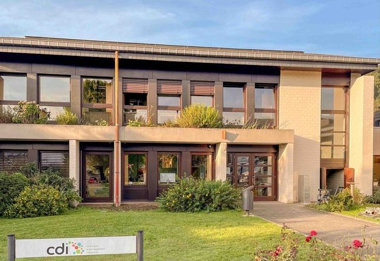
77, rue de Welscheid
L-9090 Warken
+352 81 75 51 - 1 info.annexewarken@cc-cdi.lu
Voir sur la carte